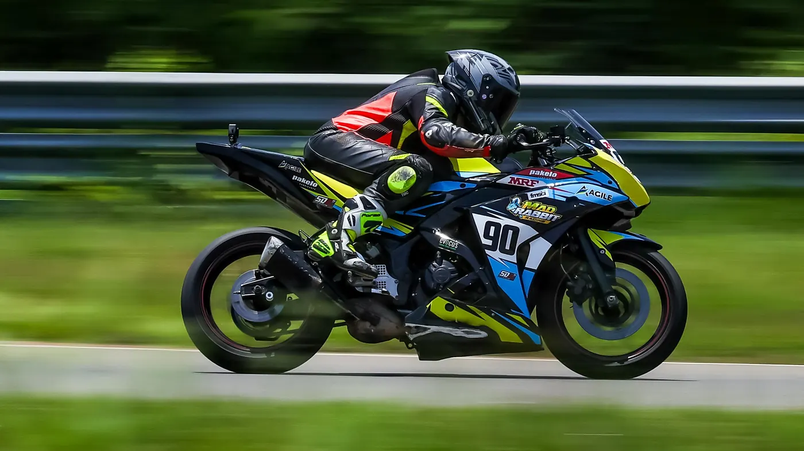
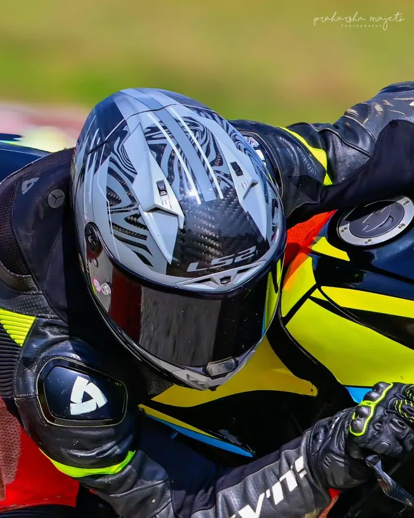
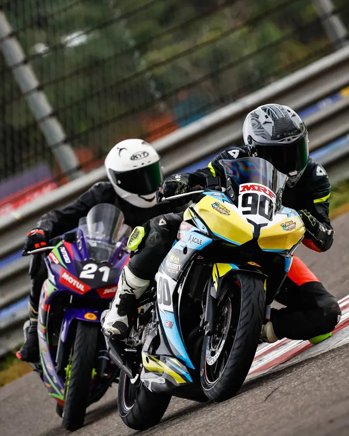
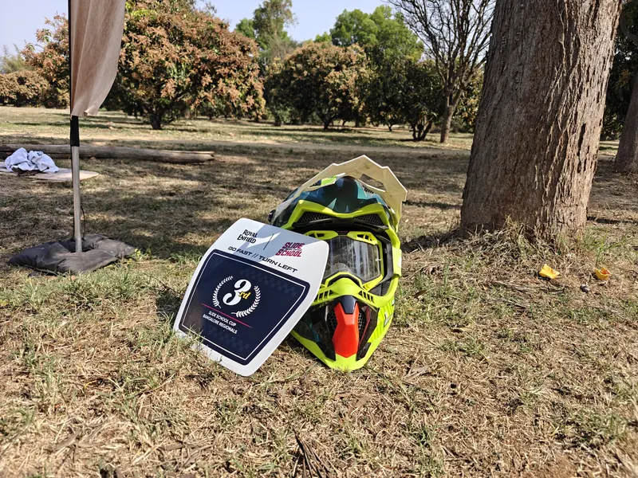
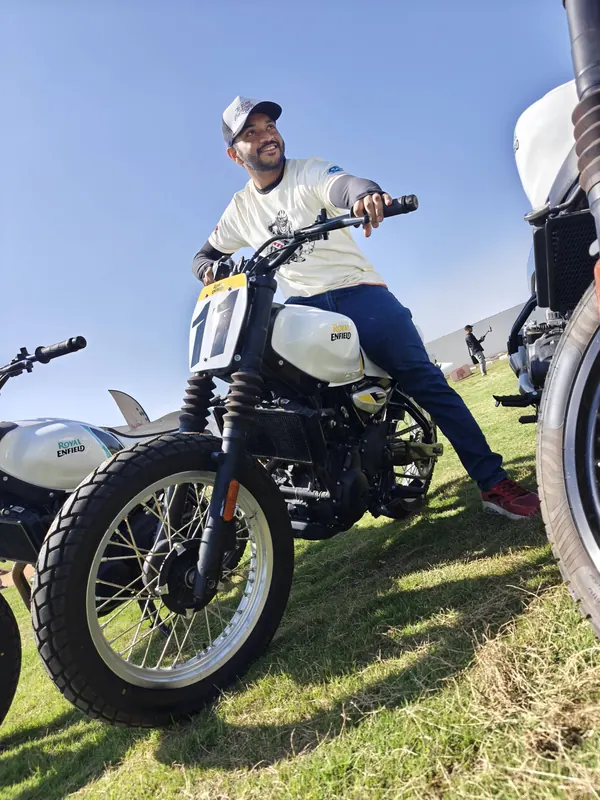
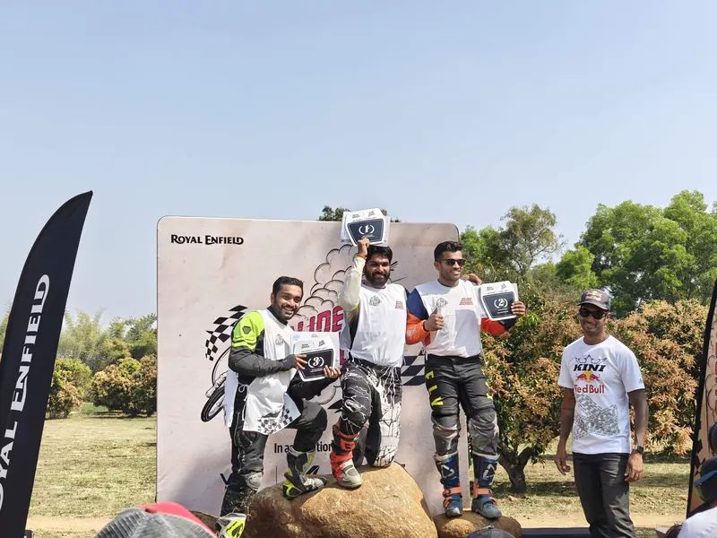

Vighnesh Natarajan Ganesh , Quantitative Researcher at Millennium and national-level motorcycle racer
Quant research at the cutting edge of commodities, built alongside the pods that trade it. Published in Quantitative Finance. Racing number 90 when the markets close.
Desks and institutions
- Millennium
- Goldman Sachs
- London Business School
- Trexquant
- University of Warwick
- BITS Pilani
Published in
- Quantitative Finance
- IEEE Transactions on Energy Markets
- Book chapter, VDE Verlag
Career
One lap
Seven corners, newest first. Scroll to drive it.
-
Lights out2024 – now
Millennium
Quantitative Researcher, Commodities
- Built from zero the power demand forecasts portfolio managers trade across 32 European markets.
- Physical and AI weather models (ECMWF, GFS, EC46, AIFS, GenCast) turned into earlier, cleaner signal.
- Own the pipeline end to end, from ingestion to monitoring.
-
Turn 12025
AI in APAC Hackathon
Winner, AI assistant category
- Millennium’s hackathon: 130+ people in 30 teams across Singapore, Bengaluru, Hong Kong and Tokyo.
- Millennium’s write-up
-
Turn 22022 – 24
Goldman Sachs
Analyst, Commodities Strats (Summer Analyst 2022)
- Forecast US gas burn by modelling marginal demand from the power market.
- Built ISO-level power models and added behind-the-meter solar to fix a structural supply bias.
- Owned the agriculture dashboard behind the GS commodity index team’s USDA reads.
-
Turn 32022 – 23
London Business School
Visiting Researcher with Prof. Derek Bunn
- Forecast British imbalance prices; a shared-parameter neural network cut tail-quantile loss by 95%.
- Built Q-learning agents that trade long and short with live value-at-risk.
- Both became first-author journal papers.
-
Turn 42022
Trexquant
Global Alpha Researcher
- Built a high information-ratio US Treasury signal from auction-day effects, mean reversion and yield spreads.
-
Turn 52021
University of Warwick
Data Science for Social Good Fellow
- Forecast county-level unemployment for Germany’s Federal Ministry for Economic Affairs and Energy, used to steer development funding.
- Shipped an open-source app and a book chapter.
-
Turn 62019 – 23
BITS Pilani
B.E. Computer Science, minor in Finance. CGPA 8.3
- Where it started: computer science with a finance minor at one of India’s top engineering schools.
-
Chequered flagNext
Next lap
Quantitative Researcher by day. #90 by weekend.
Results sheet
| Year | Result | Event | Detail |
|---|---|---|---|
| 2025 | Winner | Millennium AI in APAC Hackathon, AI assistant category | 130+ employees in 30 teams across four offices. |
| 2024 | 1st author | Quantitative Finance, vol. 24 (11) | Reinforcement learning for trading real-time electricity. With Derek Bunn. |
| 2024 | 1st author | IEEE Trans. on Energy Markets, Policy and Regulation, vol. 2 (1) | Forecasting the full distribution of British imbalance prices. With Derek Bunn. |
| 2021 | Chapter | Book chapter in Neue Dimensionen in Data Science, VDE Verlag | From forecasting work for Germany’s Federal Ministry for Economic Affairs and Energy. |
| 2026 | Finalist | Royal Enfield Slide School Cup, national final | One of 12 riders to qualify nationally. Flat track, Jaipur. |
| 2026 | P3 | Slide School Cup, Bengaluru regionals | The podium that earned the national final. |
| INMRC | Top 10 | Indian National Motorcycle Racing Championship, Stock 301–400cc | National championship sanctioned by FMSCI. #90, Yamaha R3. |
| 2017 | Record | Guinness World Record concert, “Stop Child Labour” | On keyboard in the record-setting performance. |
Research
Two first-author journal papers with Derek Bunn, Professor of Decision Sciences at London Business School, and a book chapter.
-
Quantitative Finance 24 (11), 1545–1559, 2024
Algorithmic trading of real-time electricity with machine learning
Reinforcement-learning agents that find profitable strategies in Britain’s real-time imbalance market, compared across a pure trader, a gas generator and a battery.
-
IEEE Trans. on Energy Markets, Policy and Regulation 2 (1), 30–39, 2024
Forecasting imbalance price densities with statistical methods and neural networks
A head-to-head of nonlinear statistical models and neural architectures, including N-BEATS, attention and recurrent networks, for forecasting the full distribution of British imbalance prices.
-
Book chapter, VDE Verlag
Book chapter in Neue Dimensionen in Data Science
The regional unemployment forecasting built during the Data Science for Social Good fellowship, written up for a German data science textbook.
On track
I race a Yamaha R3 in the Stock 301–400cc class of the Indian National Motorcycle Racing Championship, and flat track in Royal Enfield’s Slide School Cup.
- Number
- 90
- Machine
- Yamaha YZF-R3
- Class
- Stock 301–400cc
- Series
- INMRC, sanctioned by FMSCI
- Flat track
- Slide School Cup national finalist, 2026


Racing and forecasting reward the same habit: commit under uncertainty, read the data afterwards, find the next tenth.



